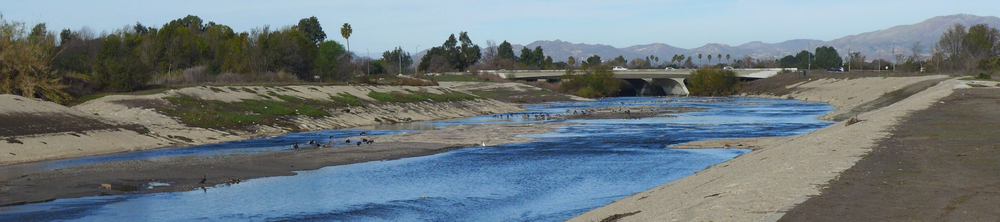
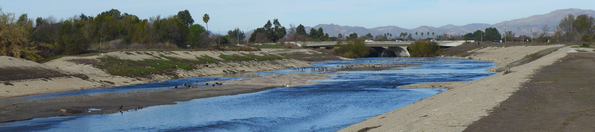

[2021-11-18] New paper (led by Keyvan Malek) in JWRPM#
Congrats to Dr. Keyvan Malek for publication of our recent paper in the Journal of Water Resources Planning and Management:
Malek, K., Reed, P., Zeff, H., Hamilton, A., Wrzesien, M., Holtzman, N. Steinschneider, S. Herman, J., & Pavelsky, T. (2022). Bias Correction of Hydrologic Projections Strongly Impacts Inferred Climate Vulnerabilities in Institutionally Complex Water Systems. Journal of Water Resources Planning and Management, 148 (1), 04021095. DOI: 10.1061/(ASCE)WR.1943-5452.0001493.
Abstract
Water-resources planners use regional water management models (WMMs) to identify vulnerabilities to climate change. Frequently, dynamically downscaled climate inputs are used in conjunction with land-surface models (LSMs) to provide hydrologic streamflow projections, which serve as critical inputs for WMMs. Here, we show how even modest projection errors can strongly affect assessments of water availability and financial stability for irrigation districts in California. Specifically, our results highlight that LSM errors in projections of flood and drought extremes are highly interactive across timescales, path-dependent, and can be amplified when modeling infrastructure systems (e.g., misrepresenting banked groundwater). Common strategies for reducing errors in deterministic LSM hydrologic projections (e.g., bias correction) can themselves strongly distort projected climate vulnerabilities and misrepresent their inferred financial consequences. Overall, our results indicate a need to move beyond standard deterministic climate projection and error management frameworks that are dependent on single simulated climate change scenario outcomes.